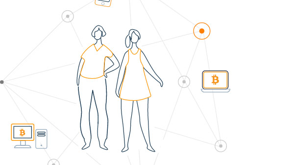
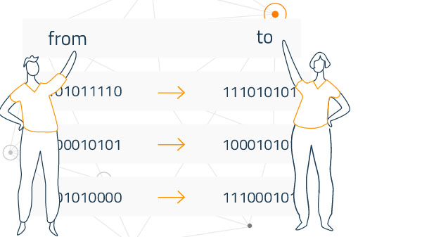
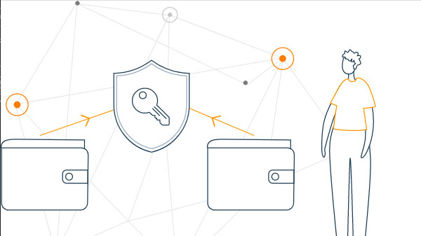
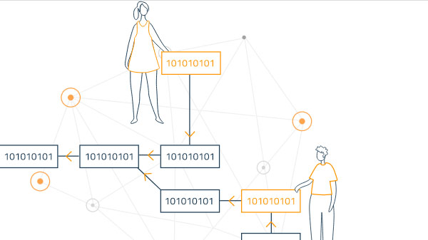

La moneda que mueve al mundo
Bitcoin (BTC) es una criptomoneda que utiliza la criptografía para controlar su creación y gestión de forma descentralizada.1 Su creador usó el alias de Satoshi Nakamoto para introducir esta tecnología, asentando muchas de las ideas existentes de la comunidad cypherpunk al lanzar la red bitcoin y sus correspondientes fichas nativas, los bitcoins.
Lo ultimo del Bitcoin
Innovacion
Antecedentes
Como Funciona
Esta es una pregunta que a menudo causa confusiones. ¡Aquí tiene una explicación rápida!
Como usuario nuevo, usted puede empezar con Bitcoin sin entender los detalles técnicos. Una vez usted tenga instalado un monedero en su ordenador o dispositivo móvil, se generará su primera dirección Bitcoin y podrá crear más cuando lo necesite. Puede dar su dirección a sus amigos para que le paguen o viceversa. De hecho, es similar a como funciona el correo electrónico, excepto que las direcciones Bitcoin solamente deberían ser usadas una única vez.

Balances - cadenas de bloques
La cadena de bloques o "block chain" es una contabilidad pública compartida en la que se basa toda la red Bitcoin. Todas las transacciones confirmadas se incluyen en la cadena de bloques. De esta manera los monederos Bitcoin pueden calcular su saldo gastable y las nuevas transacciones pueden ser verificadas, asegurando que el cobro se esta haciendo al que realiza el pago. La integridad y el orden cronológico de la cadena de bloques se hacen cumplir con criptografía.

Transacciones - llaves privadas
Una transacción es una transferencia de valores entre monederos Bitcoin que será incluida en la cadena de bloques. Los monederos Bitcoin disponen de un fragmento secreto llamado clave privada, utilizada para firmar las operaciones, proporcionando una prueba matemática de que la transacción está hecha por el propietario del monedero. La firma también evita que la transacción no sea alterada por alguien una vez ésta ha sido emitida. Todas las transacciones son difundidas entre los usuarios y por lo general empiezan a ser confirmadas por la red en los 10 minutos siguientes a través de un proceso llamado minería.

Procesamiento - mineria
La minería es un sistema de consenso distribuido que se utiliza para confirmar las transacciones pendientes a ser incluidas en la cadena de bloques. Hace cumplir un orden cronológico en la cadena de bloques, protege la neutralidad de la red y permite un acuerde entre todos los equipos sobre el estado del sistema. Para confirmar las transacciones, deberán ser empacadas en un bloque que se ajuste a estrictas normas de cifrado y que será verificado por la red. Estas normas impiden que cualquier bloque anterior se modifique, ya que hacerlo invalidaría todos los bloques siguientes. La minería también crea el equivalente a una lotería competitiva que impide que cualquier persona pueda fácilmente añadir nuevos bloques consecutivamente en la cadena de bloques. De esta manera, ninguna persona puede controlar lo que está incluido en la cadena de bloques o reemplazar partes de la cadena de bloques para revertir sus propios gastos.
¿Hasta que punto estás dispuesto a descubrir más?
Esto es sólo un resumen muy corto y sumario del sistema. Si quiere conocer más detalles, usted puede leer el documento original que explica la estructura del sistema, leer la documentación para desarrolladores (en inglés) o investigar la wiki de Bitcoin.
Antecedentes del Bitcoin
Desde la década de 1970, la utilización de firmas digitales basadas en criptografía de clave pública ha facilitado la verificabilidad y proporcionado protección de la privacidad.nota Aunque hasta su invención lo común para participar en operaciones de comercio electrónico era acudir a plataformas de entidades centralizadas basadas en confianza, antes del lanzamiento de bitcoin ya existían algunas tecnologías de efectivo electrónico con emisor centralizado basadas en los protocolos e-cash de David Chaum y Stefan Brands. Para 1997 Adam Back había desarrollado hashcash, un sistema de prueba de trabajo para el control de spam. Las primeras propuestas para la creación de escasez digital con el fin de acuñar dinero aparecieron con el «b-money» de Wei Dai en 1998, el cual propone una solución descentralizada al problema de pagos electrónicos, y el «Bit Gold» de Nick Szabo en 2005, el cual definía un mecanismo de control de la inflación basado en el mercado. Hal Finney desarrolló pruebas reutilizables de trabajo (RPOW) utilizando hashcash como algoritmo de prueba de trabajo. Nick Szabo también se dedicó a investigar otras áreas que permitían alcanzar ese objetivo, como un registro de activos tolerantes a fallos bizantinos para almacenar y transferir las soluciones encadenadas de las pruebas de trabajo.
Innovacion del Bitcoin
El protocolo Bitcoin no es sólo una manera de enviar dinero de A a B. Tiene muchas más funciones y abre la puerta a posibilidades que la comunidad todavía está analizando. Aquí le mostramos algunas de las tecnologías que se están investigando actualmente y que en algunos casos se han convertido en productos y servicios reales. Seguramente los usos más interesantes de Bitcoin todavía están por descubrir.